2
Specifying Tests and Analyses
You can perform the following tasks from the Data tab in the
- Working with Tests
- Viewing Information about a Test
- Adding, Changing, and Removing Analyses
- Specifying a Design for a Test
- Opening a Design Schematic
- Choosing the Target Simulator
- Loading State Information
- Specifying Model Libraries
- Setting the Simulation Temperature
- Specifying Analog Stimuli
- Specifying a Custom Library of Sources
- Specifying Simulation Files
- Specifying Simulation Environment Options
- Specifying Simulator Options
- Creating and Viewing the Netlist
- Editing Multiple Tests in ADE Assembler
- Modifying a Test in ADE Explorer
- Working with OCEAN-Based Tests
Working with Tests
- Adding a Test
- Renaming a Test
- Copying a Test
- Removing a Test
- Adding Notes to a Test
- Changing the Order of Tests
Adding a Test
To add a new test, do the following:
-
On the Data tab in the Data View assistant pane, right-click the test and choose Add Test.Alternatively, you can click the Create Test ( ) icon on the toolbar or click where it says Click to add test on the Data View assistant pane.The Choosing Design -- ADE Assembler form appears.
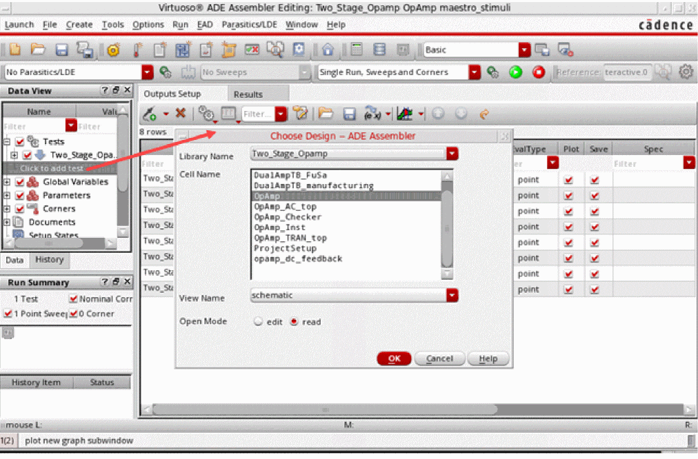 -
In the Library Name, Cell Name, and View Name fields, select a design.
See Specifying a Design for a Test for more information. -
Click OK.
Observe the following:- A new test is created and opened in Virtuoso ADE Explorer, which is more suitable to work on a single test. You can set up the test details and switch to Virtuoso ADE Assembler. The newly created test is added to the Tests tree in the Data View assistant pane.
-
The name of the test is libName_cellName
_sequenceNumber where sequenceNumber starts at1and is incremented by one for every test you add that has the same base name. This helps in assigning a unique name to each test name. For example, the first test created in themaestro_samplecell in thedemoLiblibrary is nameddemoLib_maestro_sample_1, the second test is nameddemoLib_maestro_sample_2, and so on. - The program performs a copy-from-cellview operation so that design variables appear on the Variables and Parameters assistant pane when you first add a test.
You can now edit the test details in ADE Explorer. See Virtuoso ADE Explorer User Guide for more details. After editing the details, click the up arrow to the left of test name in the Setup assistant to bring back the test in the ADE Assembler window.
Also see: Modifying a Test in ADE Explorer
Renaming a Test
To rename a test, do the following:
-
Click once to select the test name you want to change.
Click again to make the name editable.If you double-click a test name in quick succession, it is opened in ADE Explorer for editing. To disable opening of the test in ADE Explorer after its name is double-clicked, set the openExplorerOnTestDoubleClicked environment variable toThe entire test name is highlighted.nil.
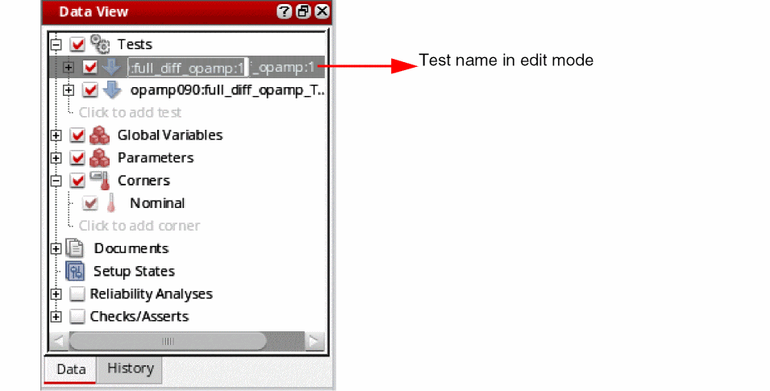 - Either type a completely new name for the test, or click to place the edit cursor and edit the name.
-
Press Return.
The new test name appears on the Data View assistant pane and the Outputs pane.
Copying a Test
To reuse the settings of an existing test, you can create a copy of the test. This allows you to quickly setup new tests.
To copy a test, do the following:
-
On the Data View assistant pane, right-click the test you want to copy and choose Create Test Copy.
The new test name appears on the Data View assistant pane.
The name of the new test has the suffix _sequenceNumber where sequenceNumber starts at1and increments by one for every copy of the original test (so that the test name of each copy is unique). For example, if the original test has the namedemoLib_ade_sample_1, the first copy of the test is nameddemoLib_ade_sample_1_1, the second copy of the original test is nameddemoLib_ade_sample_1_2and so on.
Removing a Test
To remove a test, do the following:
-
On the Data View assistant pane, right-click the test you want to remove and choose Delete.
The program deletes the selected test. You cannot undo this action.
Adding Notes to a Test
To add notes to a test, do the following:
-
On the Data View assistant pane, right-click the test for which you want to add notes and choose Notes.
The Add/Edit Notes form is displayed.
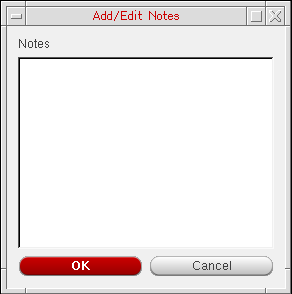 -
In the Notes field, add notes for the test.By default, the notes field can accept only 512 characters. You can change this limit by setting the maxNotesLength environment variable.
-
Click OK.
The notes are added to the test details in the ADE Assembler setup database. Similarly, you can add notes for global variables, parameters, corners, Reliability Analysis setup, or history items.
Important Points to Remember
- Notes added to a test are visible in the tooltip information, which is displayed when you hover the pointer over a test name on the Data View assistant pane. If the notes are long, only the first 10 rows are displayed in the tooltip by default. You can change this limit by setting the maxNotesRowsDisplay environment variable.
- To remove notes added to a test, right-click the test name and choose Delete Notes.
Changing the Order of Tests
When there are multiple tests defined in the ADE Assembler setup, you can change the order in which the tests are listed in the Data View assistant. The order of tests in this assistant also defines the order in which simulations are run.
To change the order of a test, do the following in the Data tab of the Data View assistant:
- Expand Tests to view all the tests.
-
Click a test name and drag it.
A blue indicator line appears at the location where you have moved it. The tooltip also shows the name of the test being moved.
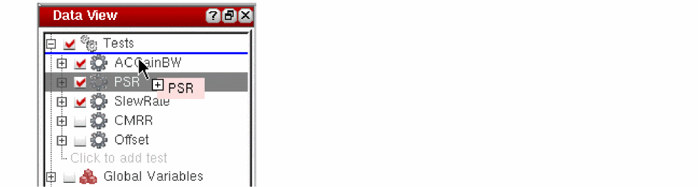 - Drag the indicator line to the desired location and drop the test.
The simulations are run in the order in which the tests are listed in the Data View assistant. The order in which the outputs appear on the Outputs Setup tab and the Results tab is also changed to match this, as shown below.
Viewing Information about a Test
You can view information about a test in ADE Assembler such as the
To view information about a test, do the following:
-
On the Data View assistant pane or on the Variables tab of the Variables and Parameters assistant pane, hover the mouse cursor over a test name.
A text box containing test information appears.
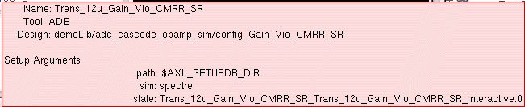If you have added notes for the test, they are appended to the test information.
After a while, or if you move the mouse cursor, the text box disappears.
Adding, Changing, and Removing Analyses
Adding an Analysis
To add an analysis to your test, do the following:
-
On the Data View assistant pane, right-click the test and choose Add Analysis.Alternatively, you can click where it says Click to add analysis in an expanded test tree on the Data View assistant pane.The Choosing Analyses form appears.
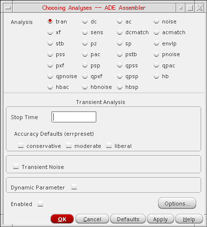The items that appear on this form depend on the simulator you selected (see Choosing the Target Simulator). -
In the Analysis section, select a radio button for the analysis type you want to define.
The setup parameters corresponding to the analysis you selected appear on the form. -
Set the analysis parameters you want (see the user guide of the simulator for more information about the options).
After you specify one analysis parameter, the Enabled check box is selected. - Click Options to view more options for the analysis. Review and if required, modify the options and close the form.
-
Click OK.
The analysis you specified appears under the test name on the Data View assistant pane.
Related Topics- Setting Up Analysis in Virtuoso ADE Explorer User Guide
- Setting up Transient Analysis for Electrothermal Analysis in Legato Reliability Solution
Changing an Analysis
To change an analysis setup, do the following:
-
On the Data View assistant pane, double-click the analysis you want to change.You might need to expand the tree by clicking the plus sign (+) to the left of the test that contains the analysis you want to change.The Choosing Analyses form appears.
The items that appear on this form depend on the simulator you selected (see “Choosing the Target Simulator”). -
(Optional) In the Analysis section, select a radio button to change the analysis type you want to define.
The setup parameters corresponding to the analysis you selected appear on the form. - (Optional) Change the analysis parameters you want (see your simulator’s user guide for more information).
-
(Optional) You can deselect the Enabled check box to turn off the analysis without removing the setup information.
- Click OK.
Changing the Order of Analyses
When you add an analysis, it is added at the end of the list of analyses displayed under the test in the Data View assistant. During simulation, the analyses are run in the same order as they appear in this list. If required, you can change the order in which the analyses are displayed and run.
To change the order of an analysis, click it in the Data View assistant, drag it to the desired position in the list, and drop.
To change the order of multiple analyses, press the Ctrl key, click the analyses to select them, drag them to the desired position, and drop.
Removing an Analysis
To remove an analysis, do the following on the
- To the left of the test containing the analysis you want to remove, click + to expand the test (if it is not already expanded).
-
Right-click the analysis you want to remove and choose Delete.
The program removes the selected analysis.
Specifying a Design for a Test
To specify a design for a test, do the following:
-
On the Data View assistant pane, right-click the test or analysis name and choose Design.
The Choosing Design form appears.
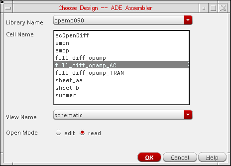 - In the Library Name drop-down list, select a library name.
- In the Cell Name list box, select a cell name.
- In the View Name drop-down list, select a view name.
- For the Open Mode, select one of the following options:
- Click OK.
A reference to the chosen design is saved with the test. Later in the flow, if you modify, rename, or move the design and it is not found while opening a maestro cellview, the test using that design is marked as invalid, and it is disabled. The test icon indicates an issue and the tooltip shows an error, as shown below.
To resolve this issue, right-click on the disabled test, and choose an appropriate command to resolve the issue. Note that in this case, you can take one of the two actions:
If you use the Change Design command and assign a valid schematic, the test is considered valid and the icon is also changed.
If you run a simulation without resolving the invalid test issue, an error message is displayed prompting you to either continue the simulation for other valid tests in the setup or to cancel the simulation run to resolve the issue before continuing further.
Opening a Design Schematic
To open the
-
On the Data View assistant pane, right-click the test and choose Open Design in Tab.
The design associated with the test appears on a new tab in your session window.
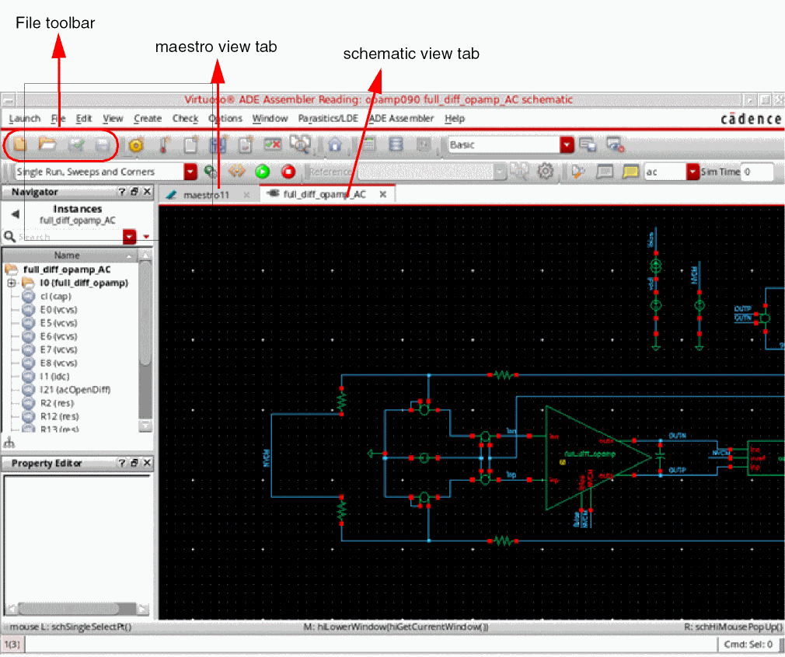
Choosing the Target Simulator
To choose the target simulator for a test, do the following:
-
On the Data View assistant pane, right-click the test or analysis name and choose Simulator.
The Choosing Simulator form appears.
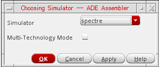For information about Multi-Technology Mode, see Multi-Technology Designs and Locally Scoped Models and Options. - In the Simulator drop-down list, select a simulator.
- Click OK.
To specify options for high performance simulation, do the following:
-
On the Data View assistant pane, , right-click the test or analysis name and choose High-Performance Simulation.
The High-Performance Simulation Options form appears.
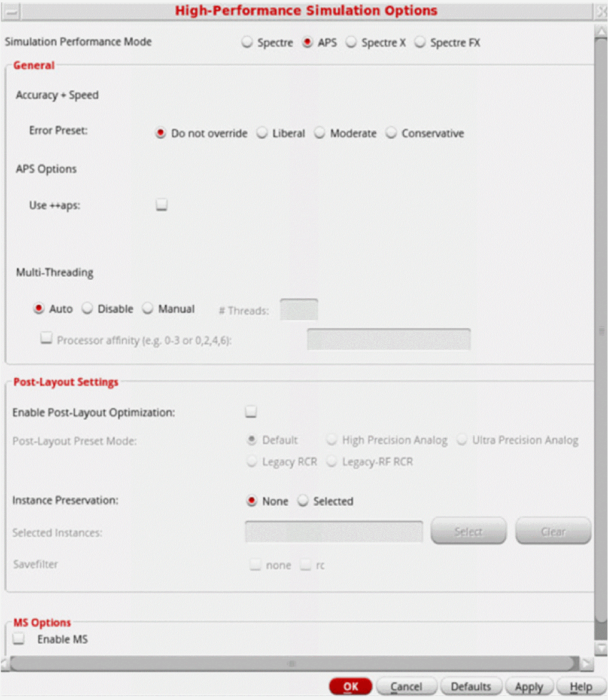By default, the APS mode is selected.
If you have the path to Spectre 19.10 set in your environment, you see an additional simulation performance mode, Spectre X, in this form.
For more details on the various performance modes and related options on this form, refer to
For details on using the AMS simulator for running simulations in ADE Assembler, refer to
For details on using the Ultrasim simulator for running simulations in ADE Assembler, refer to
Loading State Information
To load state information to a test, do the following:
-
On the Data View assistant pane, right-click the test or analysis name and choose Load State.
The Loading State form appears.
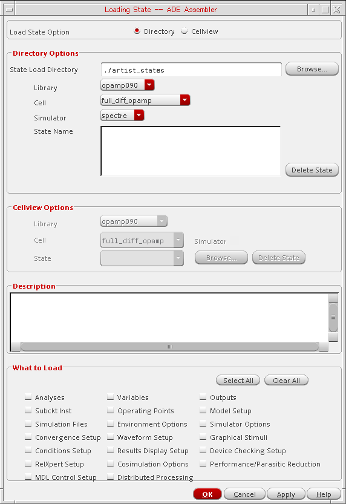In the Load State Option group box, the Directory radio button is selected by default. -
In the Directory Options group box, select a state load directory by choosing information from the various drop-down lists or by clicking Browse to open a directory browser window and navigating to your state directory.
State names appear in the State Name list box. - In the State Name list box, select the name of the state you want to load.
-
In the What to Load group box, select the check box for each type of information you want to load. For example, if you want to load analyses from your state file, select the Analyses check box; if you want to load design variables, select the Variables check box.
-
Click OK.
The state information you selected appears on the appropriate assistant panes in your environment according to the following guidelines:- ADE Assembler ignores state information that is incompatible with the selected simulator.
- The program overwrites state variables with matching name and value types.
- An error message appears if the state variable name is the same but the value type is different.
Specifying Model Libraries
To specify the model libraries to use when simulating a test, do the following:
-
On the Data View assistant pane, right-click the test or analysis name and choose Model Libraries.
The Model Library Setup form appears.
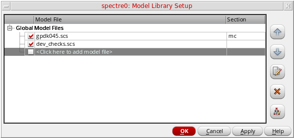 -
In the Model File column, type the path and file name of the model file you want to use.
Alternatively, you can click … to open the Choose Model File form where you can navigate to select a valid model file.
See Chapter 7, “Working with Model Files and CDF” for more information about model files. -
(Optional) In the Section column, select a section from the drop-down list.
A model file can have zero or more sections. If a model file contains no sections, there is no drop-down list available. The section you select determines which model definition the simulator uses. -
(Optional) Click the Apply to the Selected Tests in the Setup (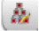
) button to update model file(s) for multiple tests in a setup.
The Apply Model Library Setup to Tests form appears.
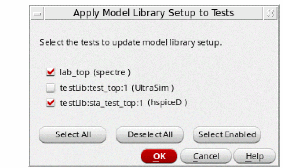-
Select the tests to which you want to apply the model file(s).
You can also click the Select Enabled button to select the tests that are enabled in the Data View assistant. -
Click OK.
For more information about sections in model files, see “Corners Modeling” in the Direct Simulation Modeling User Guide. -
Select the tests to which you want to apply the model file(s).
Setting the Simulation Temperature
You can set the simulation temperature for a test, in any of the following ways:
- By using the Setting Temperature form
-
By using a test variable named
temperature -
By using a global variable named
temperature, a common value for multiple tests
Using the Setting Temperature Form
On the Data View assistant pane, right-click the test or analysis name and choose Temperature to open the Setting Temperature form. Specify a constant temperature value or an expression using VAR. For more details, refer to the
Using a Test Variable Named temperature
Create a test variable named temperature. Specify a single value or a sweep set to vary temperature. For more details, refer to the
Using a Global Variable Named temperature
To specify a single value or a sweep set for temperature to be used by multiple tests, create a global variable named temperature, as shown below.
VAR("temp") instead of VAR("temperature"). Even if the temperature for a particular test is specified using the temperature design variable, you can access it as VAR("temp")in the results.Specifying Analog Stimuli
To specify analog stimuli (input stimulus and global sources) for a test, do the following:
vdd! for power stimulus).-
On the Data View assistant pane, right-click the test or analysis name and choose Stimuli.
The Stimuli Assignment form appears.
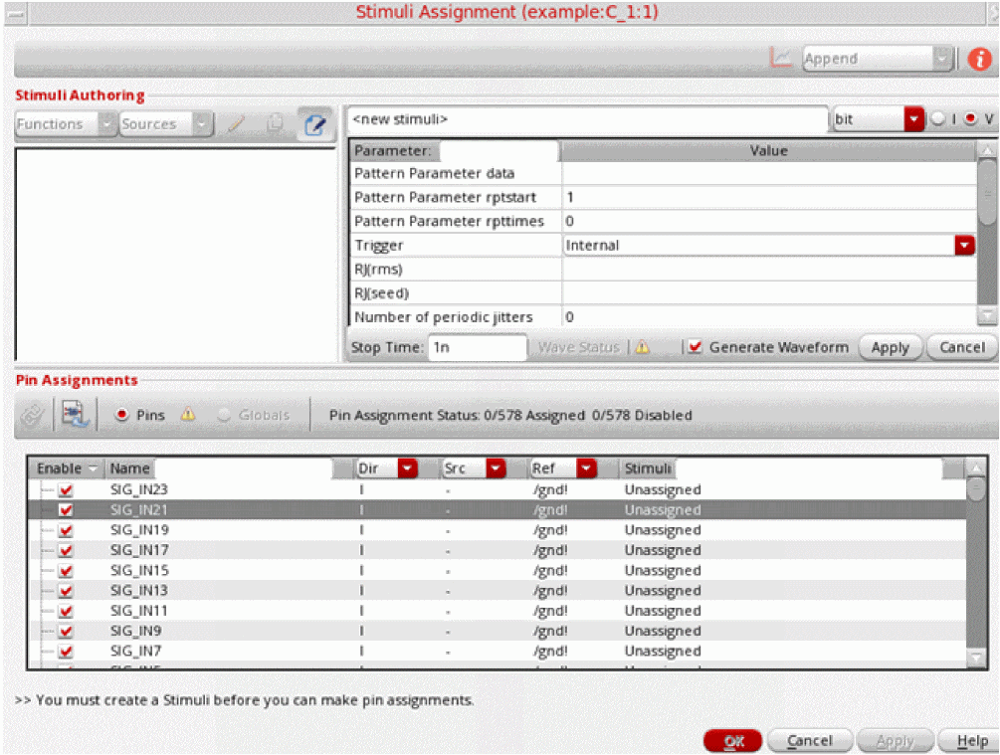
For details on how to use this form, refer to
Specifying a Custom Library of Sources
Unless you specify otherwise, all sources, whether used for stimulus or for a power supply, come from analogLib. To specify a custom library of sources, do the following:
-
In the CIW, choose Tools – Library Manager.
The Library Manager form appears. - From the Library list box, select the library of the current design.
-
Choose Edit – Properties.
The Library Property Editor form appears. -
If the refLibs property does not already exist, create it as follows:
-
On the Library Property Editor form, click Add.
The Add Property form appears. -
In the Name field, type
refLibs. -
In the Type drop-down list, select string.
The Value and Possible Choices fields appear. -
Click OK.
The refLibs property appears on the Library Property Editor form.
-
On the Library Property Editor form, click Add.
- In the value field for refLibs, type a list of one or more libraries in the search order you want.
- Click OK.
- On the Library Manager form, choose File – Exit.
Specifying Simulation Files
Depending on your design and setup requirements, you need to use various types of files for simulations run in ADE Assembler.
The table below describes each file type and its purpose.
| File Type | Description |
|
Definition files contain function and parameter definitions that are not displayed in the Design Variables list in the Data View assistant. See the following sample file that contains function and parameter definitions for the Spectre circuit simulator.
The parameters in this file are referenced by included models and are not referenced from any part of the design in the Cadence library. |
|
|
Stimulus files can contain input and power supply stimuli, initializing nodes, and estimated parasitics in the netlist. You can look at the following example file that contains Spectre circuit simulator stimuli definitions for the opamp sample design in the aExample library.
In a stimulus file, you can type node names and component names using Open Simulation System (OSS) syntax |
|
|
DSPF files contain the post-layout data, including fingered devices and net parasitics, of the design. For EMIR analysis, Spectre APS/XPS requires a complete testbench that contains the DSPF files (with the parasitic and instance sections describing the circuit to be analyzed), stimuli, and device models. |
|
|
SPEF post-layout netlists are supported by the Spectre APS/XPS EMIR flow. An SPEF netlist contains a combination of a schematic netlist with the active devices and an SPEF netlist that includes the parasitic element information. |
|
|
PSpice files contain netlists that include PCB components modeled using the PSpice format. When you use PSpice files, the top-level netlist and control statement need to be defined in Spectre or SPICE format. A subcircuit defined in PSpice netlist format is instantiated in the Spectre netlist. |
|
|
Vector (VEC) files include a table of times and values at those times. A vector file can include more than one vector definition. |
|
|
VCD (Verilog® Value Change Dump) files contain information about value changes for selected variables in the circuit design. |
|
|
EVCD (Extended Verilog® Value Change Dump) files contain variable changes in all states and provide strength information and port direction. |
You can use the Simulation Files Setup form in ADE Assembler to specify the paths to these files.
To specify simulation files for a test, do the following:
-
In the Data View assistant pane, right-click the test or analysis name, and choose Simulation Files.
The Simulation Files Setup form appears. This form contains two tabs: - If the files to be used are located at multiple locations and you want ADE Assembler to look for files in all those paths, specify those paths in the Include Paths tree.
- To specify the path to a file of a specific type, click where it says <Click here to add a path> or <Click here to add a file> in the tree of that file type.
-
Type the path and name of your file, or click the browse button to select one or more files or paths using the Choose Files/Paths form.The simulator resolves a relative path by first looking in theAfter you have specified a file or path, a new row is added to the tree. If you have multiple files, you can use the additional rows to specify the paths to those files.
netlistdirectory (relative to where you run the simulation). If the path starts with the.character, the simulator resolves this by looking in thenetlistdirectory first, then in each of the directories specified in Include Paths in the order you type them. The.character does not mean the current directory. -
(Optional) Click Apply to the Selected Tests in the Setup (
) on the Paths/Files tab of this form to update simulation files for all the applicable tests in a setup.
The Apply Simulation Files Setup to Tests form appears.
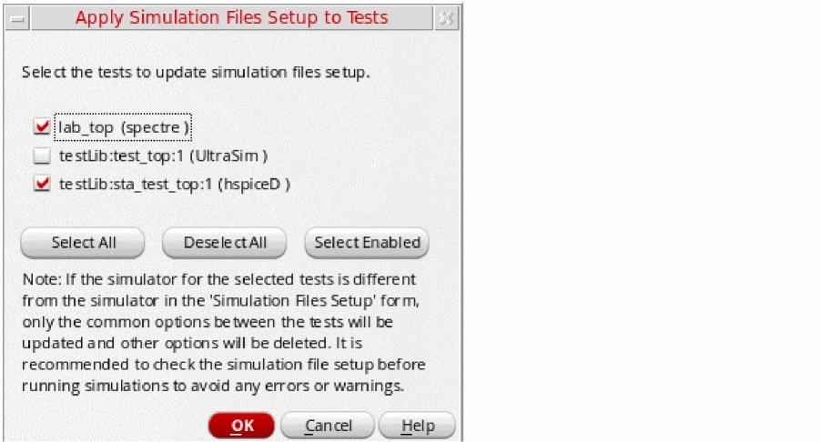 - Click OK to close the Simulation Files Setup form.
Important Points to Note
-
For some of the file types, a few additional fields are displayed on the form.
For example, when you select a vector file, the Vector File Options section is displayed on the Vector Files tab with the hlCheck field. To enable the check for H and L states for input signals, choose 1.
Selecting a VCD or EVCD file displays an additional field in which you can specify a VCD or EVCD file is. - By default, the simulation files you add are enabled for simulation. You can use the check box next to a file name to enable or disable a simulation file for simulation.
- To edit a simulation file, select the file and click . The selected simulation file is opened in a text editor where you can make changes to the file content and save it.
- To remove a simulation file from the setup, select it and click .
Specifying Simulation Environment Options
To specify environment options for a test, do the following:
-
On the Data View assistant pane, right-click the test or analysis name and choose Environment.
The Environment Options form appears.
The fields that appear on the form depend on your target simulator as follows: -
When you are done specifying options, click OK.
The environment options you specified are applied to future simulations.
Environment Options for the Spectre Circuit Simulator
You can specify the following options for the Spectre circuit simulator:
For more details about Spectre environment options on this form, refer to
Environment Options for the UltraSim Circuit Simulator
You can specify the following options for the UltraSim circuit simulator:
For more details about the Ultrasim simulator interface and the environment options on this form, refer to
Environment Options for the AMS Designer Simulator
You can specify the following options for the AMS Designer simulator:
For more details about the AMS Designer simulator interface and the environment options on this form, refer to
Environment Options for the hspiceD Circuit Simulator
You can specify the following options for the hspiceD circuit simulator:
For more details about the hspiceD simulator interface and the environment options on this form, refer to
Common Environment Options for Simulators
Switch View List
The Switch View List field appears on the Environment Options form for
- (Optional) In the Switch View List field, type a list of one or more view names to search when looking for design variables and when netlisting.
Stop View List
The Stop View List field appears on the Environment Options form for
- (Optional) In the Stop View List field, type a list of one or more view names (in no particular order) that you want the netlister to use as stopping views.
Print Comments
The Print Comments check box appears on the Environment Options form for
- (Optional) Select the Print Comments check box if you want the program to write extra comments regarding component location and name to your netlist.
Automatic Output Log
The Automatic output log check box appears on the Environment Options form for
- (Optional) Select the Automatic output log check box if you want the output log to appear automatically when the simulator generates messages.
Parameter Range Checking File
The Parameter Range Checking File field appears on the Environment Options form for
-
(Optional) In the Parameter Range Checking File field, type the name of the file containing the parameter range limits.
You do not need to type the full path for the file if it is in the directory specified in the Include Path field on the Simulation Files Setup form. The program interprets the.character in a UNIX path specification relative to the directory where you started the environment.
userCmdLineOption
The userCmdLineOption field appears on the Environment Options form for
- (Optional) In the userCmdLineOption field, type any command-line options you want to send to the simulator.
savestate (ss)
The savestate (ss) check boxes appear on the Environment Options form for the
Start from Checkpoint File (rec)
The Start from Checkpoint File (rec) check boxes appear on the Environment Options form for
-
Select one of the following Start from Checkpoint File (rec) check boxes:
-
Y indicates that you want to run spectre with the
+recoption, which restarts a transient simulation based on conditions specified in a checkpoint file. -
N indicates that you want to run spectre with the
-recoption, which does not restart a transient simulation, even if conditions for this have been specified in a checkpoint file.
-
Y indicates that you want to run spectre with the
Netlist Format
The Netlist Format radio buttons appear on the Environment Options form for the
Run Mode
The Run Mode radio buttons appear on the Environment Options form for the
Specifying Simulator Options
The options you can specify depend on your target simulator.
- Specifying Simulator Options for Spectre and UltraSimCircuit Simulators
- Specifying Options for AMS Circuit Simulator
- Specifying Options for hspiceD Circuit Simulator
Specifying Simulator Options for Spectre and UltraSimCircuit Simulators
To specify simulator options for Spectre, APS, or UltraSim circuit simulators, do the following:
-
On the Data View assistant pane, right-click the test and choose one of the following:
Menu Choice Form
The fields that appear on the form depend on your target simulator. Refer to your simulator’s user guide for information about the various options you can select. -
When you are done specifying options, click OK.
For details of Spectre simulator options, refer to the Immediate Set Options (options) section in the Analysis Statements chapter of the Spectre Circuit Simulator Reference.
Also see Environment Variables for Spectre Simulator Options Form in Virtuoso ADE Explorer User Guide.
For details of UltraSim simulator options, refer to Specifying UltraSim Options in Virtuoso ADE Explorer User Guide.
Specifying Options for AMS Circuit Simulator
To specify options for AMS circuit simulator, do the following:
-
On the Data View assistant pane, right-click the test, choose Options, then choose one of the following:
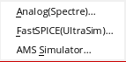The appropriate form appears. -
When you are done specifying options, click OK.
For details on AMS simulator options, refer to Setting Up AMS Options in Virtuoso ADE Explorer User Guide.
Specifying Options for hspiceD Circuit Simulator
To specify options for hspiceD circuit simulator, do the following:
-
On the Data View assistant pane, right-click the test, choose Options, then choose one of the following:
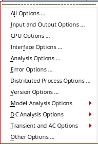 - Click All Options to display the simulator options form.
-
When you are done specifying options, click OK.
The simulator options you specified are applied to future simulations.
For details on Hspice simulator options, refer to Working with Hspice Simulator in Virtuoso ADE Explorer User Guide.
Creating and Viewing the Netlist
To create a netlist, do the following:
-
On the Data View assistant pane, right-click the test and choose Netlist – Create.
ADE Assembler updates the netlist only for those cells that have changed since the previous netlist was created. Netlist is not created for the cells that are not checked and saved. Instead, their existing netlist is used. The netlist appears in a text browser window. - When you are done viewing the netlist, choose File – Close Window.
To recreate the netlist, do the following:
-
On the Data View assistant pane, right-click the test and choose Netlist – Recreate.
ADE Assembler runs full hierarchical netlisting for all the schematics in the hierarchy. A message appears in your Command Interpreter Window indicating success or failure.
To view the netlist, do the following:
-
On the Data View assistant pane, right-click the test and choose Netlist – Display.
The netlist appears in a text browser window. - When you are done viewing the netlist, choose File – Close Window.
Editing Multiple Tests in ADE Assembler
After creating multiple tests in ADE Assembler, you can compare the settings of tests using Multi-Test Editor. Based on the comparison, you can copy the settings from one test to other tests.
To open the multi-test editor, do one of the following:
The Multi-Test Editor is displayed in a new tab, as shown below.
Multi-Test Editor User Interface
The Multi-Test Editor contains the following columns:
-
Item: Shows the names of items or settings to be compared. By default, this column lists all the components (or items) specified by the defaultComponents environment variable. You can edit this variable to modify the default items to be compared.
While working in the multi-test editor, you can modify the items to be shown by using the Select Options to Compare drop-down list in the toolbar on the Multi-Test Editor tab.
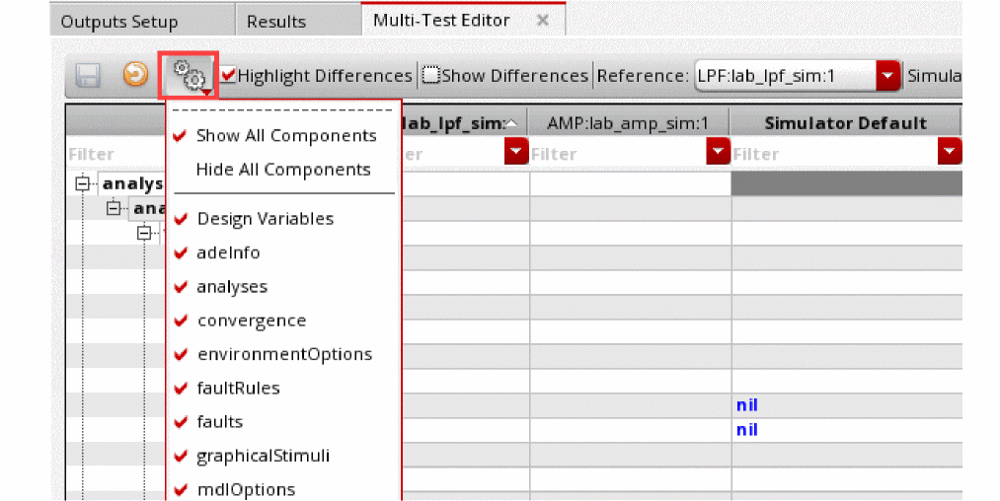 -
A reference test (the column displayed in bold to the right of Item): Shows the values set for the reference test, which is the test to which the settings of other tests are compared.
By default, the first column in the Tests tree in the Data View assistant is used as the reference test. You can change the reference test by selecting any other test name from the Reference drop-down list in the toolbar on the Multi-Test Editor tab.
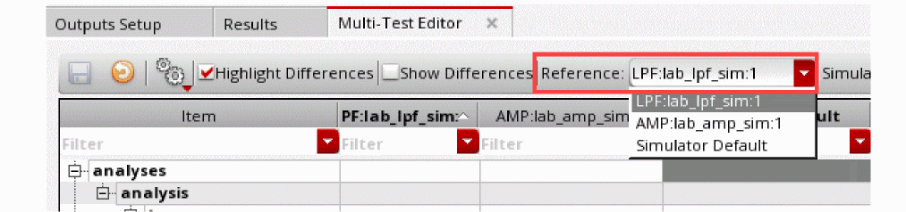Alternatively, you can drag a test and drop it on the current reference test to bring it to the left.
The Reference drop-down list shows only those columns that are visible in the table. Hidden columns are not listed. -
One or more tests to be compared (columns for other tests placed to the right of the reference test): These are the columns to be compared with the reference test, or with other tests. By default, all enabled tests from the current maestro view and with simulator same as that of the reference test are shown in the multi-test editor. Their settings from the active setup are also loaded
If you do not want to compare any specific test, you can hide the column by right-clicking on the header of the table and clearing the check box to the left of the test name. Whenever required, select the check box to unhide the test in this table. -
Simulator Default: Shows the default values set for the selected simulator. This column is hidden by default. To view it, right-click on the gray header of the Multi-Test Editor table and select Simulator Default.
By default, the tests that use the simulator same as that of the reference test are shown in the table. If the maestro view contains tests that use a different simulator, choose another simulator name from the Simulator drop-down list on the toolbar of the Multi-Test Editor tab to view the tests with use the selected simulator. Columns for other tests are hidden.
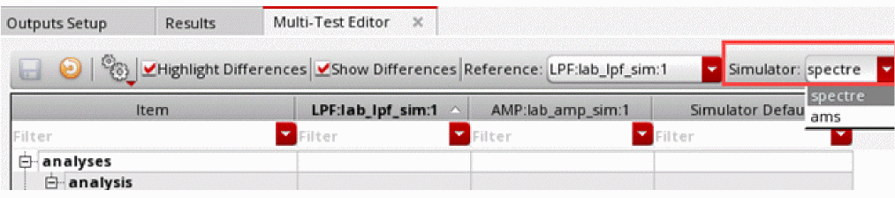
Important Points to Note
- Every time you open the Multi-Test Editor tab, the latest data from the active setup is displayed in this tab.
- The placement of the Item column is frozen. You can drag and drop other columns to change their location or use the horizontal scroll bar to view those.
- The first item, adeInfo, displays the design information, including the library, cell, view, simulator, and the path to the project directory. This item lets you to compare the design and simulator for each test.
- You can use the following commands in the context-menu of items displayed in the Items column to expand or collapse the rows for that item:
Comparing and Modifying Test Setup
The rows in the Multi-Test Editor show the values set in each test for the listed items or components. While comparing the tests, you can make use of the following features of this editor:
-
The Highlight Differences check box on the toolbar: Use this to highlight the rows with differences in values across the tests in blue, as shown below.
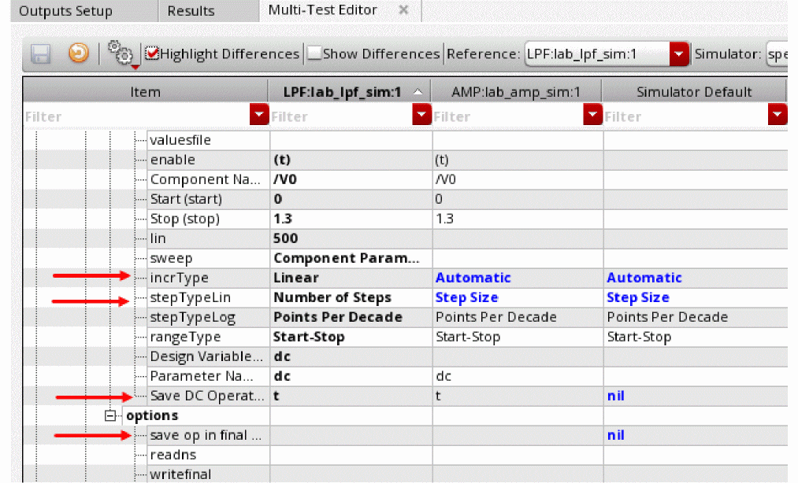 - The Show Differences check box on the toolbar: Use this to show only those rows in which the tests have different values set for the items. Other rows are hidden.
-
The filters in each column: Specify filter criteria in the filter cells given on top of each column to show rows that contain the specified values or keywords. You can customize the filters by using the context-menu of the filter cells.Filters expand the trees in the Item column to the level where the values meeting the filter criteria is met.A history of filters is saved for each column. Therefore, you can reuse a filter from the drop-down list in a filter cell.
To remove column filters, click . The table returns to the same state as it was before applying the filter.
Copying Values from Reference Test to the Other Tests
You can copy the values from the referenced test to one, more, or all compared tests, in the following ways:
-
To copy all settings from an item category, which is also referred to as a node, use the Copy Node command from the context-menu of that node. For example, in the setup shown below, to copy all analyses details from the reference test to test
AMP_lab_amp_sim:1, right-click the analyses node and choose the test name from the context-sensitive menu.
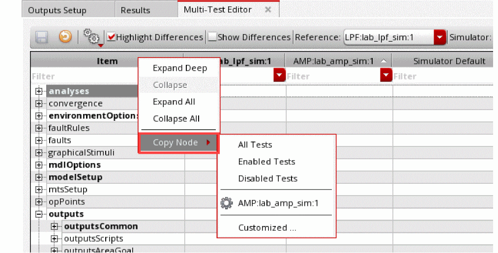 -
To copy only selected settings of a node, use the Copy Selected Items command from the context-menu of the cells.
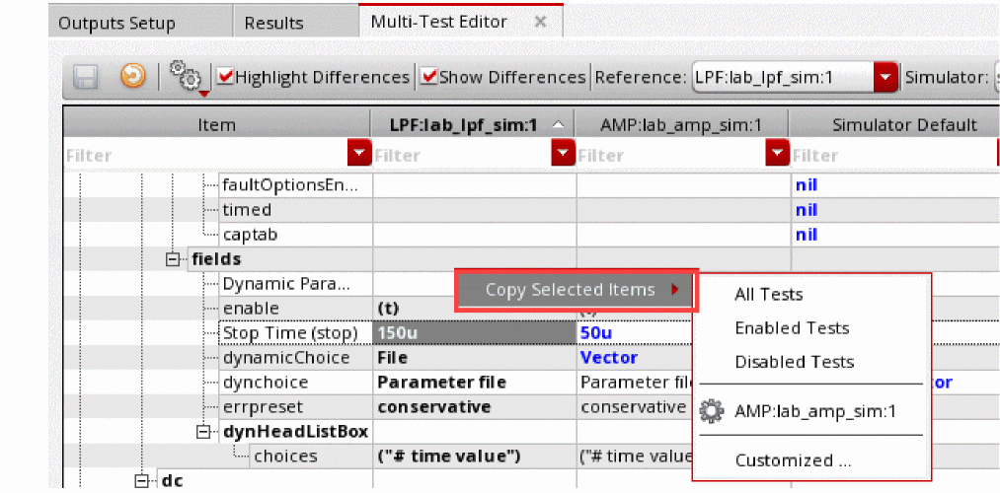
The Copy Node and Copy Selected Items commands provide the following options:
- All Tests: To copy values to all tests currently displayed in the multi-test editor.
- Enabled Tests: To copy values to all tests currently enabled in the active setup.
- Disabled Tests: To copy values to all tests currently disabled in the multi-test editor.
- Names of tests currently displayed: To copy values to a selected test
-
Customized: To copy values to one or more selected test. This command opens the Customized Tests form using which you can select tests to which you need to copy the values.
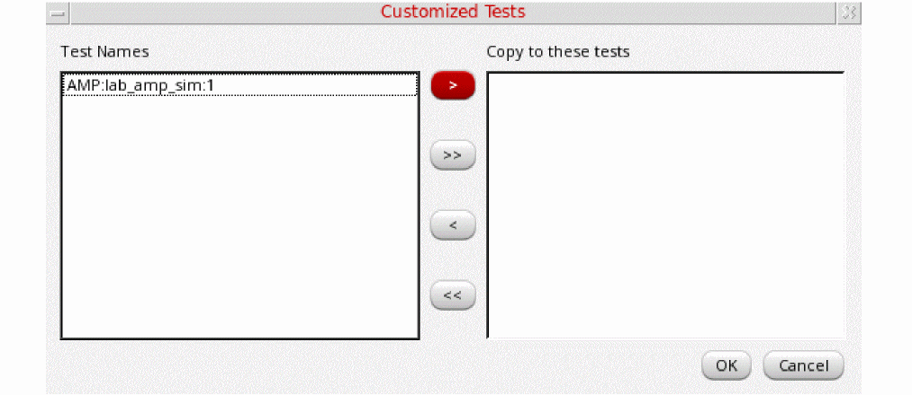
Keeping the Active Setup and Multi-Test Editor in Sync
The Multi-Test Editor allows two way synchronization:
-
To reflect the changes in values from the active setup to the columns for tests
After opening the Multi-Test Editor, if you make any change, such as a change in the test name, project directory or an analysis setting in the active setup, ADE Assembler shows a warning sign on the Reload from Active Setup command on the toolbar of the Multi-Test Editor.
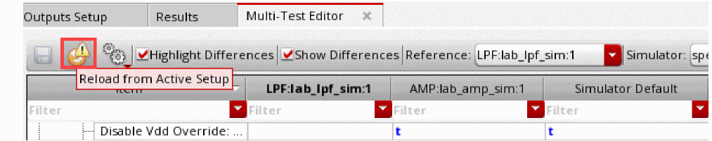Use this command to refresh Multi-Test Editor and to display the latest values from the active setup. -
To reflect the changes in values from the test columns in the Multi-Test Editor
If you make any change in the Multi-Test Editor by copying values from the reference test to other tests, the Save command on toolbar of this tab becomes active. Use this command to reflect the changes from the Multi-Test Editor in the active setup.
If you make changes in both the active setup as well as in the Multi-Test Editor, ADE Assembler shows a warning sign on the Reload from Active Setup command on the toolbar of the Multi-Test Editor.
When you click Reload from Active Setup, ADE Assembler shows a warning message to inform you that changes have been done in both.
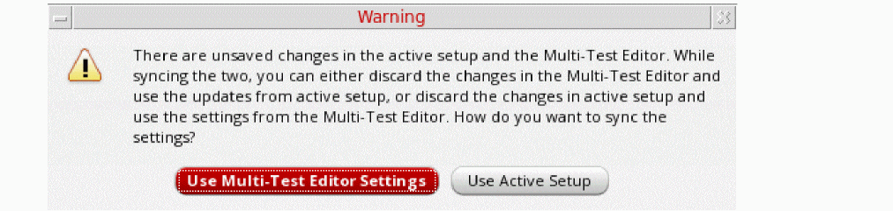The same warning message is displayed if you do not click Reload from Active Setup, but do any of the following:- Close the Multi-Test Editor
- Switch to the Results, Outputs Setup or Run Preview tab
- Run a simulation
- Close the maestro cellview
- Exit Virtuoso
In the warning message, click an appropriate button to specify whether you want to revert to the active setup or you want to save the changes in Multi-Test Editor.
Modifying a Test in ADE Explorer
Editing a test in ADE Explorer is helpful in the cases when you want to modify the setup and run simulations for a single test. In this application, you can perform various tasks, such as choosing a design, updating design variables, setting up analyses and output variables, running simulations, and performing real-time tuning.
Steps to Modify a Test in ADE Explorer
To open the ADE Explorer window for a test, do one of the following:
- Click the down arrow ( ) icon to the left of the test name in the Tests tree on the Data tab of the Data View assistant pane.
- Double-click a test name quickly (Double-clicking the test name slowly enables editing of the test name.) Also see: openExplorerOnTestDoubleClicked
- Right-click the test name and choose Open Test in Explorer
-
Choose Launch – ADE Explorer. If there are multiple tests in ADE Assembler and you choose Launch – ADE Explorer to open a test, Virtuoso displays the Choose a Test form that shows a list of tests available in the view.
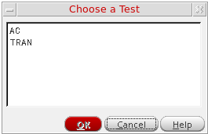Select the name of the test you want to open in ADE Explorer and click OK to open the view. The OCEAN-based tests do not appear in the list of available tests on this form.
The test is opened in the ADE Explorer window, as shown below.
If simulation results are displayed in the Results tab of ADE Assembler, they are visible in the ADE Explorer window too. However, if no results are displayed in ADE Assembler, you will see only the output setup in ADE Explorer. If required, you can load the results from a history that was earlier saved from ADE Explorer.
After the test is visible in the ADE Explorer window, you can edit it, run simulations and view output results and plots, or perform real time tuning as required. For details on the ADE Explorer environment, refer to the
To move back to ADE Assembler, click the up arrow ( ) icon to the left of test name. Any changes done in the test setup using ADE Explorer are reflected in ADE Assembler.
License Requirements for Transition
As described in the steps above, using the arrow icons to the left of test names, you can transition from Assembler to Explorer, and then from Explorer to Assembler. Once you open Assembler, the Assembler license is checked out. After this, if you transition back to Explorer, the Assembler license that is already checked out is used. Any additional license for Explorer is not required.
Important Points to Note
- The setup in ADE Explorer displays only those options that are relevant for this test. For example, only those corners are listed under Corners that are enabled for the test displayed in ADE Explorer. Corners that were enabled only for other tests in ADE Assembler are not displayed in ADE Explorer.
-
Global variables are not supported in ADE Explorer. Therefore, when a test is opened for editing in ADE Explorer, the variables shown in the Setup assistant and used for simulations are the local design variables of that test.
However, if you set the autoSyncGlobalVarsToTestVars environment variable tot, the global variables are also taken to the ADE Explorer setup when you open a test for editing. If you change a design variable in ADE Explorer and then go to ADE Assembler, only the local value of design variable for that test is updated. While changing a variable value in ADE Explorer, the value of corresponding global variable is not updated; however, a yellow highlight appears on that global variable indicating that it has been overridden by the test-specific local value. -
If you add a new design variable for the test in ADE Explorer, it is shown in the list of design variables for that test in ADE Assembler. The new variable is not added to the list of global variables. You can use the Create/Update Global command in the pop-up menu of that variable to promote it to the global level. Alternatively, you can set the autoPromoteVarsToGlobal environment variable in
maestro.cdsenvtotto automatically promote all the design variables as global variables. - If a local design variable for the test contains sweep values in the Data View assistant of ADE Assembler, the sweep set is taken to ADE Explorer. Simulations run from ADE Explorer also use the swept values. If you make any changes in the sweep set, they are copied back to the test setup in ADE Assembler.
-
Even if a test in the ADE Assembler setup uses the value specified for the corresponding global variable, only the values specified in the design variables are copied to ADE Explorer. Any changes made to its values are copied back to the design variable for that test.
Consider an example of a testtest1that has a design variableCAPand its value is set to200u, but it uses the value specified for the global variableCAPthat is set to 250u. When you edittest1in ADE Explorer, the value forCAPwill be200u, and not250u. Now, if you change this value to220uin ADE Explorer, the same will be copied back to ADE Assembler when you move the test there. -
New corners created for a test being edited in ADE Explorer will be enabled only for that test when the setup is copied back to ADE Assembler. These corners will not be enabled for other tests in ADE Assembler.
The new corners in ADE Explorer automatically get unique names. While adding the default sequence number suffix to a corner name, ADE Explorer ensures that the new corner name is not same as that of an existing corner in ADE Assembler. -
If a test uses any setup attribute that is specific to ADE Assembler, it is not reflected in ADE Explorer. For example, if the run mode in ADE Assembler is set to
Global Optimization, which is not supported in ADE Explorer, the test setup in ADE Explorer will use the default run mode,Single Run, Sweeps, and Corners.
Similarly, if the setup contains CONFIG variables or pre-run scripts, when you open it in ADE Explorer, a message is displayed prompting you to disable these attributes in ADE Assembler and then reopen the test in ADE Explorer to run simulations. - If a test in ADE Assembler uses an overridden job policy, its job setup is also copied to ADE Explorer and it does not use the default job policy in ADE Explorer. If you make any change in the job setup, the changes are copied back to that test setup in ADE Assembler.
- When you transition from ADE Assembler to ADE Explorer, the Checks/Asserts check box is checked in the Setup assistant of ADE Explorer only if both of the following check boxes are selected in ADE Assembler:
-
If you had run a simulation in ADE Explorer, that is also listed on the History tab of the Data View assistant In ADE Assembler. The history is named as
ExplorerRun.0. -
You cannot open an OCEAN-based test in ADE Explorer. If you click the down arrow (
 ) icon for an OCEAN-based test in the Data View assistant pane, it is opened in the OCEAN Test Editor window.
) icon for an OCEAN-based test in the Data View assistant pane, it is opened in the OCEAN Test Editor window.
Working with OCEAN-Based Tests
In ADE Assembler, you can save the simulation setup in OCEAN scripts and run these scripts either from UNIX shell or from Virtuoso GUI.
For more details on creating and running OCEAN scripts, refer to Creating and Running an OCEAN Script.
Return to top